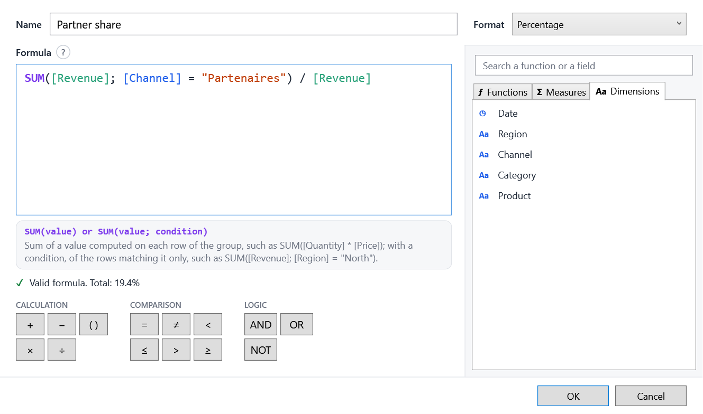

Calculated measures¶
Ratios, shares, conditional sums: measures computed from the rows of each group, inside the same query. You declare some in the model; your users write their own in a formula editor.

Why not just a measure?¶
A ratio cannot be summed: the margin rate of a region is its total margin divided by its total revenue, not the average of its sales' rates. A calculated measure is computed per group, in the query (in SQL with EF Core), so it can be sorted, limited to a Top N and filtered like the others. Users cannot change its aggregation.
Declared by you¶
| Method | For |
|---|---|
Ratio |
A sum divided by a sum; empty when the denominator sums to zero |
Calculated |
Any aggregate expression over the rows of the group |
Formula |
A formula, as users write them: they can read and rewrite it |
model
.Ratio(s => s.Margin, s => s.Amount, "Margin rate", "MarginRate", format: "P1") // Σ margin / Σ revenue
.Ratio(s => s.Amount, s => 1, "Average basket", "AverageBasket", format: "#,##0 €") // Σ revenue / number of sales
.Calculated(g => g.Sum(s => s.Amount) - g.Sum(s => s.Cost), "Gross profit", "GrossProfit")
.Formula("SUM([Amount]; [Channel] = \"Web\") / [Amount]", "Web share", "WebShare", format: "P1");
Guard your divisions
With Calculated, guard divisions yourself: some databases fail on a division by zero. Ratio and formulas do it
for you. A Formula may only use fields declared before it; an invalid one throws an ArgumentException.
Created by your users¶
In the field list, + Calculated measure opens the editor; ✎ and ✕ on a measure's hover edit and delete it. Users give a name, a format and a formula over the model's fields, written with their captions.
The editor helps them as they type:
- the formula is colored, and its problem underlined and explained;
- the help of the function the caret is in shows above it;
- suggestions only offer what can be written there: after
SUM(, measures and number dimensions; in a condition, dimensions; after[Region] =, the values of Region; after a condition,ANDandOR; - operators come as a keypad, functions, measures and dimensions in tabs to search and insert;
- the measure's total previews as it is typed.
The formula language¶
| Formula | Computes |
|---|---|
[Margin] / [Revenue] |
The margin rate of each group |
SUM([Quantity] * [Unit price]) |
A sum of a product, row by row |
SUM([Revenue]; [Region] = "North") / [Revenue] |
The share of the North |
COUNT([Channel] = "Web" AND [Date] >= "2024-01-01") |
The rows matching a condition |
DISTINCTCOUNT([Customer]) |
The number of distinct customers |
IF([Revenue] > 1000; [Margin]; 0) |
A value by condition |
[Revenue] * (1 + [@Rate]) |
With the value of a variable the dashboard changes |
Functions¶
| Function | |
|---|---|
SUM, AVERAGE (or AVG), MIN, MAX |
Aggregate an expression read row by row. An optional last argument keeps the rows matching a condition. |
COUNT(), COUNT(condition) |
The rows, or those matching the condition. |
DISTINCTCOUNT(field) |
The distinct non-empty values. |
IF(condition; then; else) |
On the group or on each row; without else, empty. |
A measure on its own ([Revenue]) is aggregated as in the field list. MeasureFormula.Functions lists the functions
with their usage and description, in the user's language.
Syntax¶
- Operators:
+ - * /and parentheses. A division by zero gives an empty value. - Comparisons:
= <> < <= > >=(texts and yes/no values with=and<>only), combined withAND,OR,NOT;TRUEandFALSE. - Numbers take a decimal point; texts and dates go in double quotes:
"North","2024-12-31". - Arguments are separated by
;or,. - A dimension is only used inside a function; a measure calculated by the model (
Ratio,Calculated) only outside.
In SQL, formulas become CASE WHEN, COUNT(DISTINCT ...)... in the same query as the other measures.
Measures using measures¶
A formula can use the report's other calculated measures: with [Cost] = [Revenue] - [Margin], the cost rate is
[Cost] / [Revenue]. They are computed per group, so they are used on their own, not inside a function.
- A measure cannot use itself, even through others: A measure cannot use itself: this measure → [Cost] → this measure. This is checked as it is typed and when a report is opened.
- Deleting a measure names the measures that use it.
- A copied visual takes the measures it uses along; pasted formulas follow the measures that are renamed.
Redefining a model's measure¶
Users can also change the measures you declared (✎ on any measure). Their version is saved in the report under the same name, and redefines the measure for the whole report:
- a formula that is only the measure itself (
[Revenue]) keeps your computation, and only changes its caption and format; - any other formula replaces the computation:
AVERAGE([Revenue])changes the aggregation, the measure's name in it still meaning your definition.
↺ in the field list, or Restore in the editor, removes the redefinition.
Where they are saved¶
Calculated measures live in EasyBIContext.Measures, one per open report: every field list, designer and visual of the
context sees them.
Your own formula editor
FormulaEditing (Tokenize, Calls, CallAt, CompletionAt, ContextAt) and MeasureFormula.Check (the problem
and where it is written) give the same help as EasyBI's editor. CalculatedMeasureEditor exposes it as a
view-model: Tabs, Search, OperatorGroups, Suggest, Accept, Insert, CurrentCall, Problem.
MeasureContext gives MeasuresOf, GetField, Definition, Needed, UsedBy, Using; MeasureFormula
Validate, Check, ToDisplay and Rename.